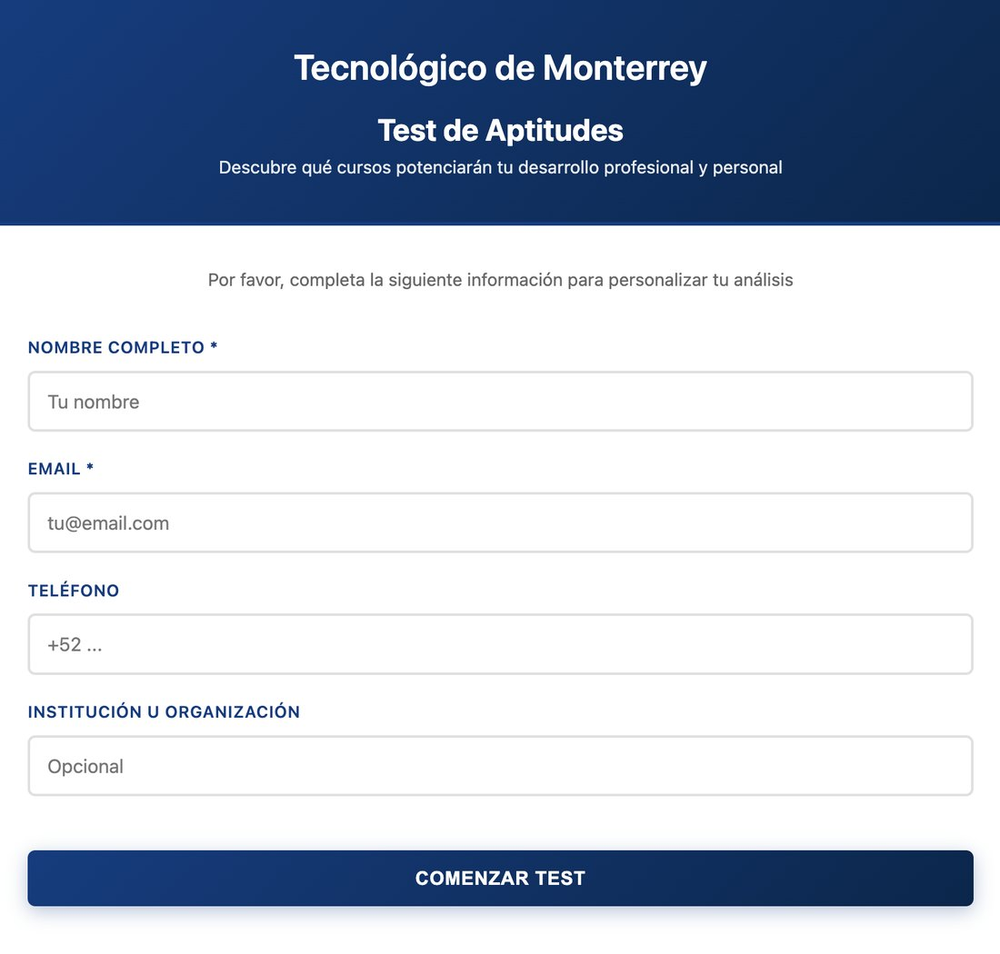
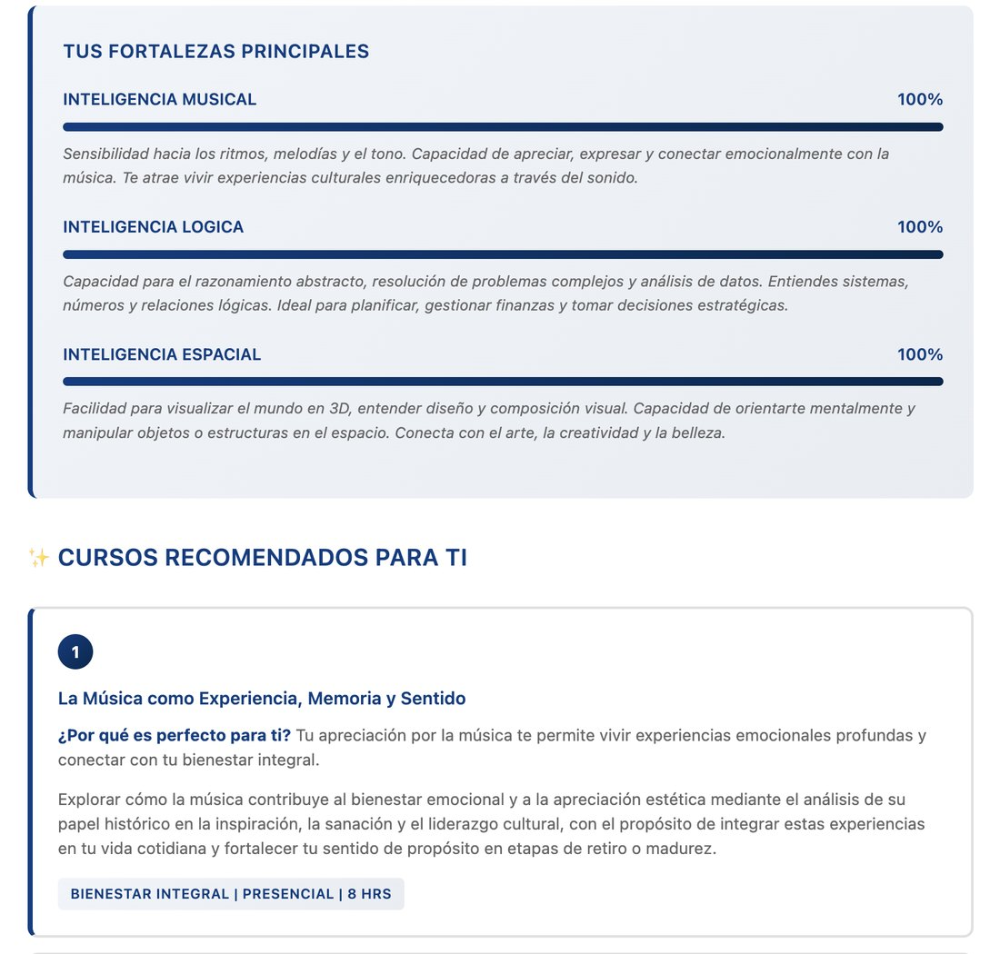
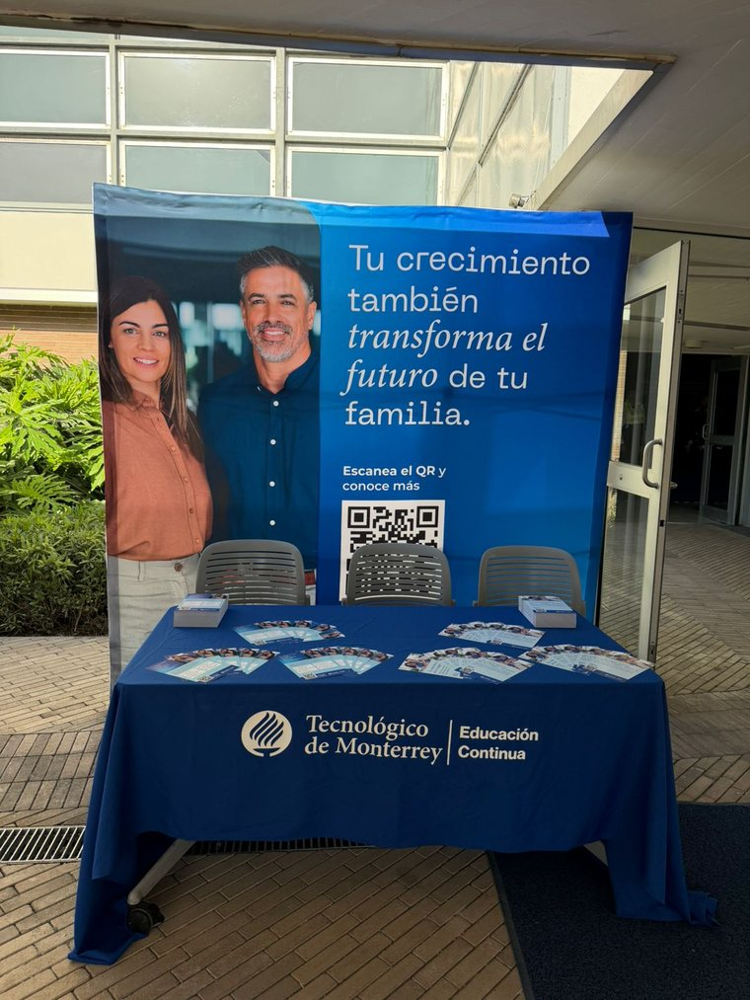

Educación Continua · Tec de Monterrey
Propuesta de activación para el Callejero de Distrito Tec. Edición piloto del domingo 20 de septiembre de 2026, frente al E1.
Quien se acerca contesta un test de 4 minutos, conoce cuál de las ocho inteligencias es la suya y recibe por correo los cursos que corresponden a ese perfil. También puede participar en los retos de neurobienestar y escribir en el muro qué quiere aprender este año.
La convocatoria no permite entregar folletos ni cerrar inscripciones en el lugar. El código QR y el correo posterior son los únicos canales disponibles.
El objetivo del stand se reduce entonces a uno solo: obtener el contacto de la persona junto con su autorización para escribirle después.
En 9 m² y con dos personas no es posible dar una plática ni un taller sentado.
Cada actividad dura entre 30 segundos y 5 minutos, y se repite durante las cinco horas del evento.
Es un festival familiar de domingo. Asiste el segmento "Silcer", aunque en muchos casos llega acompañado de sus hijos.
Por eso el test recomienda cursos de dos catálogos distintos según el rango de edad: Silver Economy de 55 años en adelante y Desarrollo Humano apto para más edades.
Los tres operan al mismo tiempo y cada uno cumple una función distinta dentro del embudo de captación.
Un caballete al filo de la banqueta con lona plastificada y marcador borrable: «Este año voy a aprender ______».
La gente se detiene a leer lo que escribieron los demás y agrega su propia respuesta. El muro se borra y se reutiliza durante toda la noche.
Quien participa recibe un sticker temporal del Tec, a elegir entre ocho diseños que corresponden a las ocho inteligencias.
Son 16 preguntas sobre las ocho inteligencias múltiples y toma alrededor de 4 minutos. Se contesta en el celular de la persona o en una de nuestras tablets.
El resultado muestra las tres inteligencias dominantes, los cursos que corresponden a ese perfil y un curso reto asociado a la inteligencia más baja.
El catálogo asociado tiene 26 cursos: 16 de Silver Economy y 10 de Desarrollo Humano.
Son cinco retos breves que se hacen de pie y ocupan poco más de un metro cuadrado. Están tomados del temario del curso Lab Neurobienestar, de 6 horas presenciales.
Se pueden aplicar por separado, en 30 segundos cada uno, o encadenados como un circuito de 5 minutos.
Todo el material necesario cabe en una caja de zapatos.


Cada reto tiene tres niveles de dificultad. Como no podemos entregar premios físicos, subir de nivel funciona como incentivo, y los mejores resultados de la noche se anotan en una esquina del muro.
Consiste en mantener el equilibrio sobre un pie. Se dan tres intentos, igual que en el protocolo del estudio original.
Dos personas se lanzan una pelota blanda y en cada pase dicen la siguiente letra del abecedario.
Un letrero rígido con 20 palabras impresas en un color que no coincide con lo que dicen. Hay que nombrar el color, no leer la palabra.
Marcar el paso en el mismo lugar mientras se resta desde 100. La dificultad es pareja para cualquier edad, así que nadie queda expuesto frente a los demás.
Decir la mayor cantidad de palabras de una categoría en 30 segundos. Es el reto que más ruido genera y, por lo mismo, el que más gente atrae.
Un minuto de respiración guiada: cuatro tiempos para inhalar, cuatro para sostener y cuatro para exhalar.
No tiene marcador y no se graba. Sirve para que la gente termine la experiencia tranquila y corresponde a lo que enseña el primer módulo del curso.
El reto de equilibrio replica el protocolo de la cohorte CLINIMEX, con 1,702 adultos de 51 a 75 años, publicado en el British Journal of Sports Medicine. Uno de cada cinco participantes no logró completarlo.
Los ejercicios de doble tarea provienen de un programa de brain gym evaluado en 2026 en Frontiers in Psychology, con 75 adultos de 82 años de edad promedio y sin eventos adversos reportados.
Se presentan siempre como ejercicios de entrenamiento y en ningún caso como pruebas diagnósticas. No se interpreta el resultado de ninguna persona, no se emiten valoraciones de salud y no se menciona nada parecido a una edad cerebral.
El mensaje de cierre es que estas capacidades se entrenan, y ahí se comenta que el curso arranca el 23 de septiembre en Campus Monterrey, a unas cuadras del evento.
El montaje se realiza en el horario que marca la organización. La operación se ajusta conforme cambia el ambiente de la calle entre la tarde y la noche.
Instalación de lonas, mesas y caballete. Se prueba la señal, la carga de los dispositivos y el escaneo del QR con luz de día.
Con sol fuerte y poca gente, corremos el flujo completo con los primeros visitantes y ajustamos el guion antes de que llegue el grueso del público.
Es el momento de mayor movimiento en el muro. Los retos se aplican de forma continua y el circuito completo se abre cuando se junta un grupo.
Es la mejor ventana para el público adulto mayor, porque hay menos prisa y las conversaciones se alargan.
Anochece cerca de las 19:50 · se enciende la lámpara del QRÚltima ronda de retos, fotografía del muro completo y desmontaje.
La mesa se coloca al costado y nunca cruzada al frente. Una mesa que funciona como barrera corta el paso de la gente y desactiva el stand.

Educación Continua ya cuenta con lona de fondo y mantel institucional, que se montan sobre mesa larga con sillas. Eso deja fuera de producción dos de los materiales más caros y reduce el gasto a los elementos propios de esta activación.
Hay dos diferencias con este montaje. La lona actual lleva otro mensaje, así que el titular tendría que ir en un letrero rígido aparte o habría que producir una lona nueva. Además, aquí la mesa está al frente y con folletos encima, y en el Callejero va al costado y sin ningún impreso.
| Material que llevamos | Para qué | Estatus |
|---|---|---|
| Lona de fondo | Marca y superficie de captación. La actual sirve como fondo; el titular iría en letrero aparte | Ya la tenemos |
| Mantel institucional | Marca a la altura de quien pasa sin detenerse | Ya lo tenemos |
| 2 letreros rígidos en caballete | Titular de la activación, QR grande y la promesa: test gratis en cuatro minutos | Por producir |
| 1 letrero informativo | Fecha de arranque y modalidad del curso Neurobienestar | Por producir |
| Lona plastificada y marcadores borrables | Muro de Intenciones y récords de la noche | Por producir |
| Letrero rígido de Stroop | Reto 3. Se reutiliza indefinidamente | Por producir |
| Stickers temporales, 8 diseños | Reconocimiento por escribir en el muro | Se puede diseñar inhouse -Diana- |
| 1 pelota blanda | Reto 2 | Por conseguir |
| Contenedor cerrado | Recolección de los respaldos de los stickers | Por conseguir |
| 1 o 2 tablets | Para apoyar con el quiz. | El equipo cuenta con tablets. |
| Power banks | Cinco horas de operación sin garantía de corriente | Por conseguir |
| Lámpara LED | Después de las 19:50 el QR no se escanea sin luz dirigida | Por conseguir |
| Garrafón y vasos reutilizables | Hidratación del equipo y de quien lo necesite | Por conseguir |
Cada regla de la convocatoria, con la medida que tomamos para cumplirla.
Todos los datos se capturan dentro del formulario digital del test; no levantamos información en papel. Pedimos nombre, correo, teléfono opcional y rango de edad.
El botón de envío permanece deshabilitado hasta que se marca la primera casilla. El QR del evento incluye un parámetro de origen que permite reportar por separado los contactos de esta edición. El correo de seguimiento se envía dentro de las 48 horas siguientes, segmentado por rango de edad.
Es la primera vez que Educación Continua participa en el Callejero. No contamos con un referente propio para calcular cuánto convierte un stand de este tipo y vamos a operar con dos personas. Las cifras siguientes son una línea base conservadora y no una meta de desempeño.
En un piloto, la información que se obtiene vale más que el volumen que se capta. Estos seis datos se registran durante la jornada y son el entregable principal de esta edición.
| Qué medimos | Para qué sirve la próxima vez |
|---|---|
| Escaneos del QR frente a tests completados | Indica si la dificultad está en detener a la gente o en la duración del test |
| Tiempo promedio de llenado | Permite decidir si conviene una versión corta de 8 preguntas |
| En qué punto abandonan el formulario | Identifica qué campo nos está costando contactos |
| Hora pico real de captación | Sirve para decidir en qué horario concentrar al equipo |
| Cuántas personas usaron tablet y cuántas su propio celular | Define cuántos dispositivos hay que llevar |
| Cuál de los cinco retos detuvo a más gente | Permite reducir el circuito a dos o tres retos |
Los tres marcados en rojo dependen de nosotros y no de la organización, y cualquiera de ellos puede detener la propuesta. Conviene empezarlos aunque la convocatoria todavía no abra.